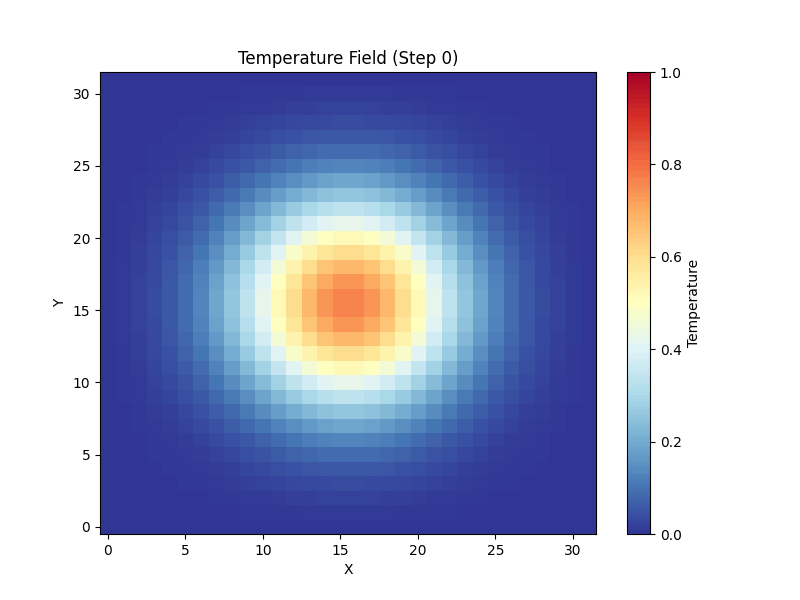
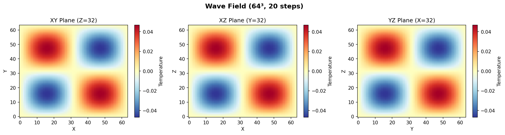
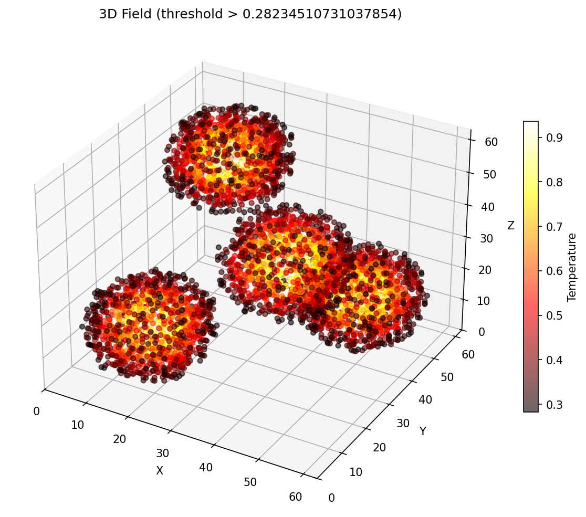
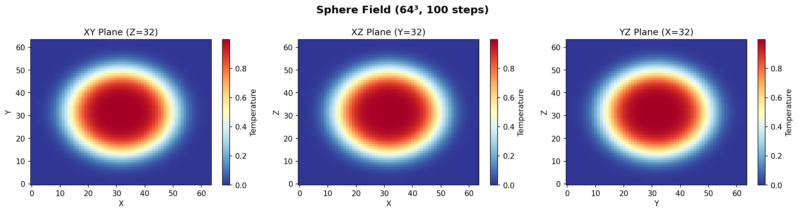
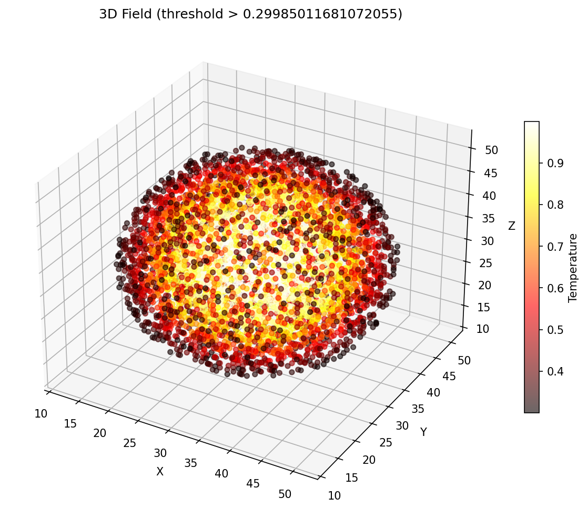
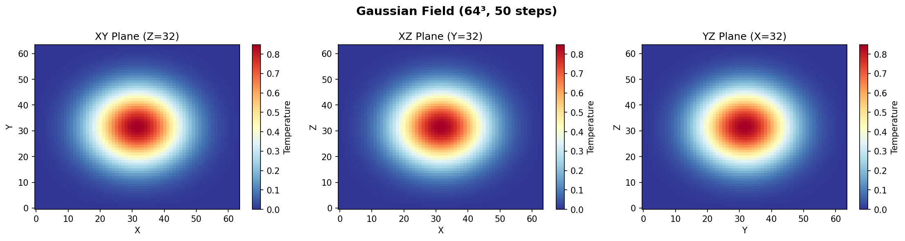
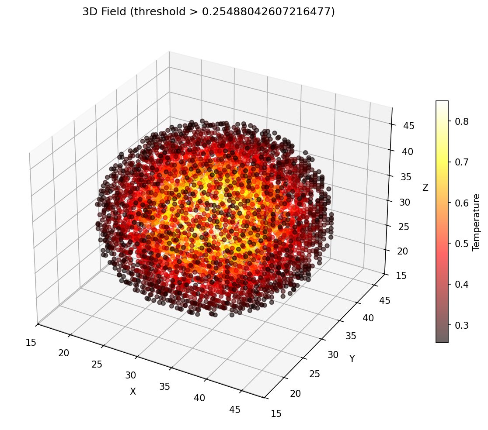

Animation
Time evolution of the field, exported as an animated GIF from the 3D run.

A 3D, 7-point stencil mini-weather solver, designed to run on HPC clusters with MPI + OpenMP + CUDA. This page lets you see what that algorithm actually does: a 2D port runs live in your browser, alongside the real outputs produced by the cluster runs.
The cluster code applies a 7-point stencil on a 3D grid. The same kernel logic runs here on a 2D slice — every frame, each cell is replaced by a weighted average of its neighbors plus a small diffusion term. Heat sources, sinks and an optional wind keep the field interesting.
These images are produced by the C++ code running on the Magic Castle cluster — checked in
under source/results/ and rendered as-is here. The browser simulation above is a
live 2D analogue; the images below are the genuine 3D solver output.
Time evolution of the field, exported as an animated GIF from the 3D run.

Plane-wave initial condition, 2D slices through the volume.


Spherical Gaussian, diffused outward by the 7-point operator.


Default initial state from the default scenario.


The same stencil is implemented four ways. Each one is one of the source files committed in
source/src/. The point of the project is to see how much faster the same physics
gets as you move from a textbook implementation to one that uses every resource on a node.
Single thread, straight triple loop. Baseline — every other variant is measured against this.
src/stencil_cpu_serial.cpp
Same algorithm, but loops are tiled so each block fits in L2/L1. Same FLOPs, fewer cache misses.
src/stencil_cpu_blocked.cpp
Threads across cores, ranks across nodes; halo exchange keeps the stencil consistent at boundaries.
src/stencil_cpu_parallel.cpp · halo.cpp
Same operator, but each cell becomes one CUDA thread. Coalesced loads + shared-memory tiling.
src/stencil_gpu.cpp · stencil_gpu.cu